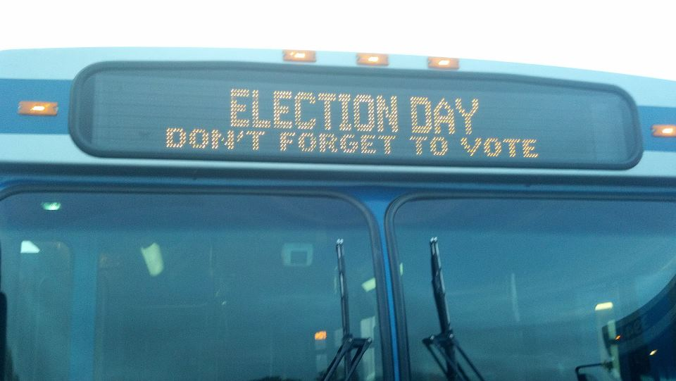

On April 4, 2017 the City of Madison will elect 20 alders to serve for two years. All but one of the current Council members seeks re-election. Of those, four are being challenged and two people are running for the open seat. There are thus 10 candidates running for five contested seats. This document aims to provide useful transit-related information on them as part of our mission to “educate the community and its leaders ... about local transit policies and plans.”1
We asked via email how the candidates might deal with Madison’s public transit system:2
While you may wish to issue a short statement on the topic, you may also wish to briefly answer the following questions:
- Do you have a particular focus issue, and if so, how do you see its relation to public transportation? Do you see public transportation important or unimportant to people in your district?
- How would you prioritize Madison having a multi-modal downtown terminal for inter-city travel? Would your opinion be affected by it being explicitly made a civil rights issue?
- Do you consider public transportation a fallback for people who cannot drive or do you see it something that should be convenient and attractive for everyone?
- If you faced the choice between allocating money to widen a street in an effort to reduce congestion or funding facilities for alternative transportation, what would you choose? Would your choice depend on the recommendations of the Mayor or City Engineer?
One incumbent, two challengers and one open-seat contestant replied. Reprinting the replies in their entirety would take too much space so we summarize them, sometimes augmenting that with information available on candidate websites, Ballotpedia webpages and/or the Council’s website.3
MABA does not endorse as we are a 501(c)(3) organization.
District 1 — Alder Barbara Harrington-McKinney vs. David Handowski
In her reply, Alder Harrington-McKinney says that she supports and would champion public transportation priorities. She currently sits on the ADA Transit Subcommittee to the Transit and Parking Commission. Based on much additional experience with aging and disability rights on the one hand and with social programs geared toward the re-entry to civil society of formerly incarcerated individuals on the other, she has seen how critically important public transportation can be for neighbors who use the bus, perhaps as their only means of transportation — for employment, access to community services, access to community resources and access to other things. “Access to all modes of transportation is a critical component of Madison's future ... Transportation and affordable housing are key indicators of our City’s commitment to put our customers as the focus of everything we do. Educate first, regulate when necessary and continuously improve City services.”
Challenger David Handowski4 is co-founder and vice-president of the fairly new Madison West Neighborhood Association. He is also chair of a citizen ad hoc committee currently working with City Planning to update the High Point Raymond Road Neighborhood Development Plan. The Plan must anticipate the exponential growth caused by the development of a new UW Research Park and the continued expansion of Epic. And it must recognize that convenient car, bus, bicycle and pedestrian transportation are all important. The various transportation modes should be planned for initially, as revising infrastructure later can be unnecessarily costly. A cross-section of people, whether transit-dependent or not, want to be able to travel long distances without having to drive or bike. While the demand for transit is partly driven by economics: “In periods of economic duress ... ridership likely increases due to decisions driven by income ...,” it can also be driven by other factors: “ ... transit by seniors is likely to increase demand over time for those wanting to enjoy more of what Madison has to offer ...”
District 8 Alder Zach Wood vs. John Terry, Jr.
Alder Wood did not reply to our email. Nor does he appear to be on a city transportation committee. The Council’s website lists his district as including three neighborhood associations: 1) Capitol Neighborhoods; 2) South Campus Property Owners Association; and 3) State-Langdon Neighborhood Association. They all had almost complete access to a transit stop in 2015 according to the city’s Neighborhood Indicator website.
Challenger John Terry, Jr. emailed that he is a frequent bus rider.
District 10 Alder Maurice Cheeks vs. Steve Fitzsimmons.
Alder Cheeks did not reply to our email. The Council’s website lists him as on the Sustainable Madison Transportation Master Plan Oversight Committee (Madison in Motion).5 It also lists his district as including seven neighborhood associations with access to a regular transit stop ranging from 88.3 percent (Midvale Heights) to 100 percent (Allied Dunn’s Marsh).
Challenger Steve Fitzsimmons has ridden the bus for years. He sees public transportation as vital for everyone, whether or not they also use a car. He would like our current bus system enhanced — enlarged, more convenient, appealing and affordable. He muses that it could be part of a Regional Transit System that would connect people to jobs and businesses in different localities. He would like to make it attractive enough that people will want to use it without a need to consider civil rights laws.
Fitzsimmons thinks congestion is dealt with more effectively, sustainably and in a fiducial manner by investing in ‘alternative’ transportation modes rather than by adding lanes to roads. He would voice that and other independent stances in decision-making contexts rather than simply rubber stamping what others might say.
District 11 Open Seat Bradley Campbell vs. Arvina Martin
District 11 will have a new alder as Timothy Gruber was appointed on March 1, 2016 to fill out the term of Chris Schmidt with the understanding that he would not run for election to the post in 2017. Access to a regular transit stop among the five neighborhood associations and one planning area in his district ranges from 96.2% (Faircrest) to 100% (Glen Oak Hills).
Contestant Bradley Campbell sees all city functioning through a Sustainability (with the big S) lense, where “sustainability” includes social and health factors not just environmental ones. Public transportation is an important element of that, especially as Madison grows. Transportation is an important component of an economic development that benefits everyone, whether people use transit themselves or not. People should have the option of living well without a car, or of using one instead of two cars. “Transit makes a city more vibrant by allowing options” and it “brings people together.”
Campbell thinks that Madison should have a multi-modal terminal if it is to thrive in the future. People need to be able to connect to other places without necessarily using a car. And widening a street is often not the best way to reduce congestion. Moving people with buses, bikes or enhanced sidewalks often makes more sense.
Contestant Arvina Martin did not reply. Ballotpedia says that she has been a policy analyst and statewide tribal liaison for the Wisconsin Department of Transportation.
District 14 Alder Sheri Carter vs. José Rea
Alder Carter did not reply to our email. The Council’s website lists her as on seven committees, none a transportation committee. It also lists her district as including seven neighborhood associations with access to a regular transit stop ranging from 58.6 percent (Indian Springs) to 100 percent (Arbor Hills). It additionally listed two associations for which there were no data: Bridge-Lakepoint and Highland Manor Homeowners.
Challenger José Rea did not reply.
Footnotes
1 See http://www.busadvocates.org/aboutus.html
2 We used the campaign email addresses kindly provided by the City Clerk’s office.
3 See http://www.cityofmadison.com/Council/
4 Campaign website is http://www.davidformadison.com/
5 See http://www.cityofmadison.com/dpced/planning/transportationmasterplan/
 Madison Area Bus Advocates
Madison Area Bus Advocates